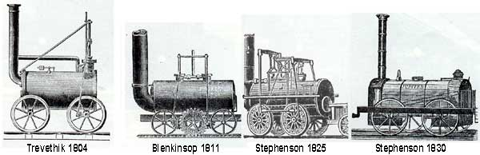

Il concetto di treno nasce con la rivoluzione industriale anche se mezzi simili seppur primitivi esistevano già in epoca romana. Si inizia di parlare di vero e proprio treno a vapore con la presentazioni delle macchine semoventi di Nicolas Cugnot nel 1769 che dimostrava che era possibile generare energia direttamente a bordo con macchinari compatti ed efficienti. Poi con la diffusione a larga scala delle macchine a vapore la richiesta del carbone aumentò e quindi i produttori dovevano trovare un modo di trasportare il carbone in grande quantità ad una velocità superiore. Le macchine a vapore iniziarono a sostituire gli animali per il traino di carrelli. Nel 1801 Richard Trevithick costruì la prima locomotiva e venne impiegata nelle miniere. I successi dei motori di George Stephenson e del figlio Robert Stephens portarono il treno a fiorire e a diffondersi, fino a creare le condizioni per la nascita del primo treno commerciale. Il 27 settembre 1825 la Locomotion n.1 trainò il primo treno commerciale della storia, sulla tratta tra Stockton-on-Tees e Darlington. Sia la locomotiva che la tratta erano state progettate da George Stephenson. Il treno era composto da carri da miniera su cui venivano caricati i passeggeri comuni, ed essa rappresentava la prima carrozza passeggeri vera e propria, su cui viaggiavano alcuni notabili; la velocità media era di circa 9 km all'ora. 4 anni dopo la Rocket raggiunse i 48 km/h.
PRIME LINEE FERROVIARIE La prima ferrovia pubblica al mondo, la linea Stockton-Darlington, nell'Inghilterra nordorientale, fu progettata da George Stephenson e inaugurata nel 1825. Per alcuni anni trasportò solo merci integrando la forza di traino della locomotiva con quella dei cavalli da tiro. La prima ferrovia pubblica in grado di trasportare anche passeggeri, mossa esclusivamente da locomotive a vapore, fu la Liverpool-Manchester, aperta nel 1830. Anche questa fu progettata da George Stephenson, con l'assistenza del figlio Robert. Il successo commerciale, finanziario e tecnico della Liverpool-Manchester trasformò il concetto di ferrovia, e non solo in Gran Bretagna. Visto fino ad allora come un mezzo di breve percorrenza utile soprattutto per l'industria estrattiva, il sistema ferroviario veniva finalmente considerato in grado di rivoluzionare il trasporto a lunga distanza, sia delle merci, sia dei passeggeri. Si pensava che un giorno chiunque sarebbe stato libero, previo pagamento di un pedaggio, di mettere un treno sulle rotaie, così com'era possibile accedere ai canali con le barche. Ben presto, però, il volume dei traffici sulla Liverpool-Manchester mostrò che i movimenti su un percorso fisso dovevano essere controllati da una centrale di smistamento del traffico e che, tra un treno e l'altro, doveva essere interposta un'adeguata distanza di sicurezza. Dal 1835 in avanti, la costruzione di linee per il collegamento delle città principali fu sviluppata rapidamente in Gran Bretagna e nell'Europa continentale.
La prima linea ferroviaria, è il tratto ferroviario che collega Stockton e Darlington, nel nord-est dell’Inghilterra, il responsabile di questo importante progetto fu George Stephenson, l’inaugurazione di questa linea fu nel 1825, questo tratto ferroviario veniva usato principalmente per lo scambio di merci. Invece la prima linea ferroviaria che includeva anche il trasporto dei passeggeri, fu pubblicata nel 1830 e si riguarda il tratto ferroviario tra Liverpool e Manchester, il responsabile di questa linea fu ancora George Stephenson. Questa linea ebbe un’enorme successo sia a livello commerciale che a livello finanziario, tanto che l’utilizzo della ferrovia cambiò completamente, non solo in Gran Bretagna, visto che il treno non veniva visto sia come un mezzo di breve durata, utile per il trasporto dell’industria estrattiva, ma anche come un mezzo utile, per i trasporti di lunga durata, sia per i passeggeri che per le merci. Infatti dal 1835, verranno rapidamente costruite e inaugurate le linee ferroviarie, che collegheranno le città più importanti e popolari, tutto ciò avverrà non solo in Gran Bretagna, ma anche nel resto d’Europa. Il treno in epoche successive verrà usato anche in ambito militare aggiungendo al loro telaio più corazza e montando sopra dell’artiglieria.